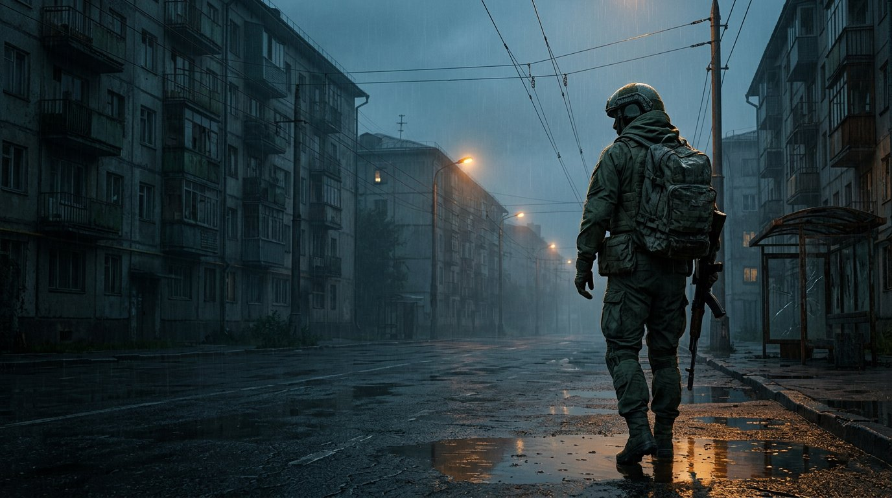
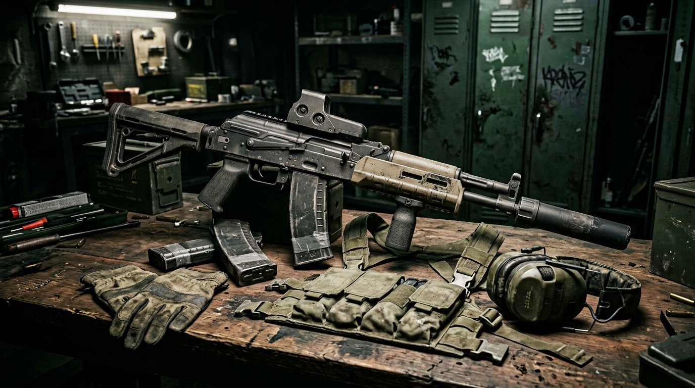
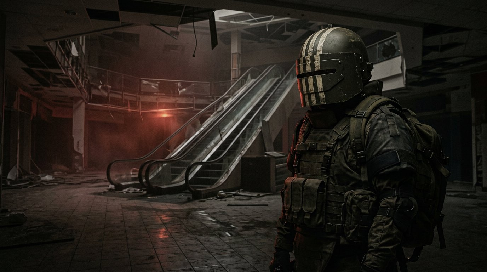
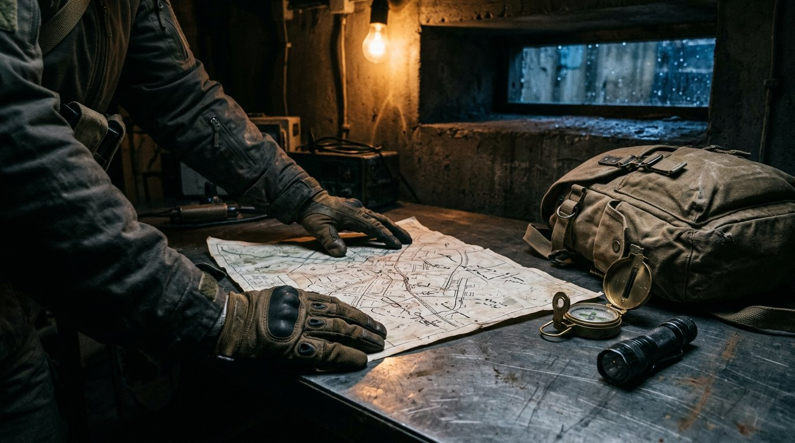
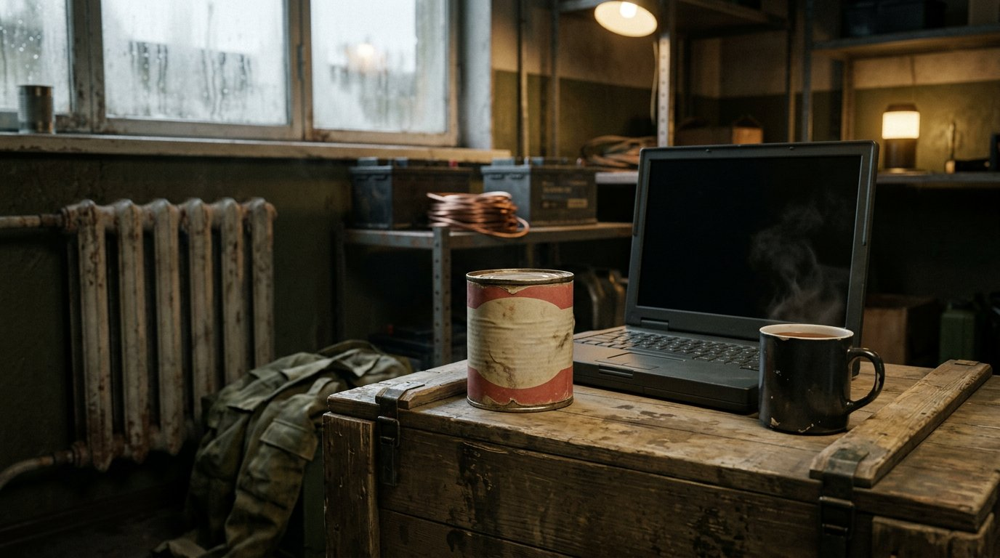

Cartes et extractions
Comparez 13 lieux, leurs variantes, les accès rapportés et les transits — sans confondre catalogue et disponibilité en raid.

Le guide francophone
Votre prochain raid se prépare ici.
De Ground Zero à Terminal : cartes, équipement, boss et mises à jour d’Escape from Tarkov. Retrouvez aussi les repères pour jouer en solo avec SP‑Tushonka.
01 Dossiers de raid
Cartes, équipement, rencontres et progression : entrez par le dossier utile à votre prochain raid.
Comparez 13 lieux, leurs variantes, les accès rapportés et les transits — sans confondre catalogue et disponibilité en raid.

13 routes publiées : familles, comparateur par mode, compatibilités de mods et tableau des munitions.

Ce qui change d’un mode ou d’un événement à l’autre, sans confondre un boss et sa variante.
02 Fréquence Norvinsk
Ce qui est publié, ce qui a changé et ce que Battlestate a seulement annoncé.
Battlestate revient sur la conception du port qui conclut la campagne. L’article est paru le 16 novembre et a été relayé le 18 : ce n’est pas une sortie de carte.
Lire l’article de BSG (révélations)Le journal BSG du 18 novembre prévoit 1.3.5.0 pour la seconde moitié du mois, sans jour précis ni annonce d’installation. Préparez vos repères, surveillez le Launcher officiel et vérifiez la version après la mise à jour : conseils du guide, pas prérequis BSG. Unity 6 et les améliorations techniques sont annoncés; DirectX 12, DLSS Frame Generation et Reflex restent futurs, végétation reportée, FSR 4 visé avant fin 2026.
Lire le journal technique de BSGLa campagne Twitch propose notamment deux chemises de PMC. Fin annoncée le 23 novembre à 15 h UTC (16 h à Paris), indépendamment de l’événement Halloween.
Voir les conditions des DropsLe 16 novembre, BSG signalait que l’événement continuait : quarantaine ou recherche du vaccin dans les versions infectées de Factory et The Lab. Aucun jour exact de clôture dans cette annonce.
Lire le point Halloween de BSGBSG confirme l’installation sans préciser le numéro dans le message. Le changelog communautaire l’indexe comme 1.3.0.2.48779 : à distinguer du patch de référence 1.3.0.0.
Voir le message d’installationEn Seasonal, BSG ajoute des mallettes contenant des documents aux largages. Tous modes : les offres d’équipement Black Division demandent désormais de l’argent ou des objets de troc, au lieu des dogtags spéciaux.
Lire l’ajustement BSG sur X (13 nov.)Kord Breach doit se terminer le 7 décembre. Ce jour n’est pas une date de lancement confirmée pour UNTAR Control. Les récompenses débloquées sont conservées ; les succès uniques Seasonal sont reportés sur les profils PvP et PvE.
Lire l’annonce UNTAR ControlBSG recommande de finir la chaîne Kord Breach : plusieurs objectifs Seasonal sont allégés, Black Division atteint 100 % sur les lieux concernés en Seasonal, et les offres d’équipement uniques débloquées resteront disponibles dans tous les modes. Wedge est aussi affaibli tous modes.
Lire l’équilibrage BSG sur X (12 nov.)03 Guides en vedette
Un objectif simple, une sortie vérifiée et un kit que vous pouvez remplacer.

Parcours débutant
Choisissez une carte accessible dans votre profil. Si l’entraînement est proposé, servez-vous-en pour reconnaître deux repères et une sortie de secours.
Scav ou PMC ? Un raid Scav n’engage pas l’équipement du PMC. L’entraînement ne fait pas progresser votre profil, contrairement aux raids du PvE officiel.
0/3 repères prêts
Commandes EFTGuide du débutant
Dix étapes, une checklist de départ et 24 réponses sur les profils, les soins et l’extraction.
Lore et univers
Les factions et la chronologie de Norvinsk. Les révélations de la campagne restent masquées.
À Ground Zero comme à Customs, l’index des cartes ne dit pas quelle sortie est disponible pour votre PMC ou Scav. Recoupez la liste du raid et les conditions de la sortie.
Un transit mène à un autre lieu ; ne le prenez pas pour un retour au stash. Terminal et Icebreaker ne sont pas des cartes de départ ouvertes à tous.
Ouvrir le hub Cartes — 13 fiches et comparateur Voir aussi l’index communautaire des lieuxVérifiez dans l’interface du jeu le calibre et la compatibilité du chargeur avant d’acheter un kit. Dans les tableaux, les dégâts et la pénétration sont deux valeurs distinctes.
Ne comparez pas le poids d’un boîtier seul au poids d’un preset complet, ni un prix PvP au prix Seasonal.
Ouvrir le catalogue Arsenal Lire les munitions et le tableau balistiqueUne fiche de boss vaut pour une carte et un mode donnés. Les annonces d’événement peuvent changer les rencontres et les taux ; le rééquilibrage du 12 novembre en est un exemple.
Killa et les variantes d’événements ne doivent pas être traités comme une seule rencontre.
Relire l’équilibrage BSG04 Profils et branches
Choisissez votre profil avant d’appliquer les conseils, prix ou conditions d’accès d’un autre mode.
Le profil permanent oppose des joueurs et de l’IA dans les raids du jeu principal. Son stash et sa progression ne sont pas ceux du personnage Seasonal.
Présentation du jeu par BSGPersonnage et économie de saison séparés. Le Battle Pass est accessible dans les modes EFT ; la fin annoncée de Kord Breach n’est pas la date d’un wipe du profil principal.
Règles de lancement du SeasonalUn profil distinct, solo ou coop, contre des adversaires IA. Le Prestige PvE est une mécanique volontaire, pas un retour au fonctionnement du PvP saisonnier.
Notes sur le Prestige PvEDes matchs et un calendrier de mises à jour propres. Les passerelles de progression ne rendent pas ses règles identiques à celles d’EFT.
Dernier patch Arena repéré · 0.6.2.5
Projet communautaire · Ancien SPT
Une branche solo distincte du PvE officiel. La stable 4.1.6 utilise le build EFT 0.16.9.5.40743, pas le client live du patch de référence.